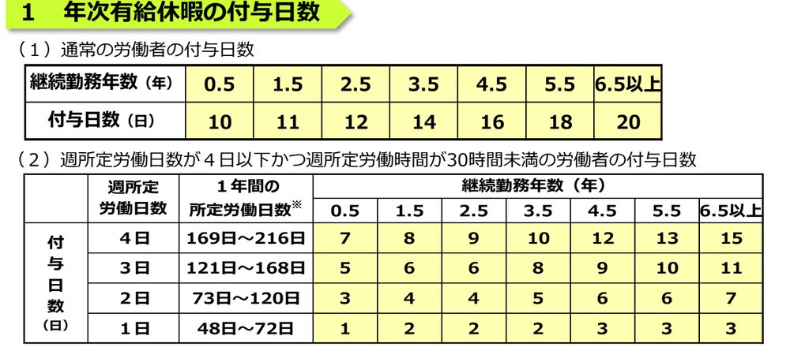

Paid Leave Ledger
※ 年次有給休暇の付与日数（法定最低日数）は、従業員マスタ管理で設定した入社日・週の所定労働日数・1日の所定労働時間から自動計算しています。
※ 取得日数は、勤怠管理画面でステータスを「有給休暇」に設定した日を自動集計したものです（半日単位・時間単位の取得記録には対応していません）。
※ 年10日以上の年次有給休暇が付与される労働者については、基準日から1年以内に5日以上取得させることが法律上の義務です（労働基準法第39条第7項）。
